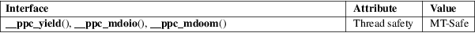

__ppc_yield, __ppc_mdoio, __ppc_mdoom − Hint the processor to release shared resources
Standard C library (libc, −lc)
#include <sys/platform/ppc.h>
void
__ppc_yield(void);
void __ppc_mdoio(void);
void __ppc_mdoom(void);
These functions provide hints about the usage of resources that are shared with other processors on the Power architecture. They can be used, for example, if a program waiting on a lock intends to divert the shared resources to be used by other processors.
__ppc_yield() provides a hint that performance will probably be improved if shared resources dedicated to the executing processor are released for use by other processors.
__ppc_mdoio() provides a hint that performance will probably be improved if shared resources dedicated to the executing processor are released until all outstanding storage accesses to caching-inhibited storage have been completed.
__ppc_mdoom() provides a hint that performance will probably be improved if shared resources dedicated to the executing processor are released until all outstanding storage accesses to cacheable storage for which the data is not in the cache have been completed.
For an explanation of the terms used in this section, see attributes(7).

GNU.
glibc 2.18.
__ppc_set_ppr_med(3)
Power ISA, Book II - Section 3.2 ("or" architecture)